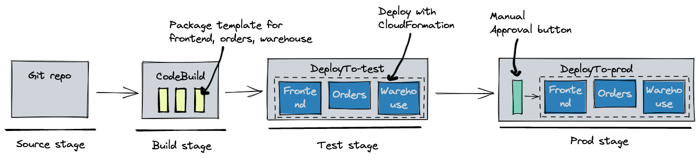
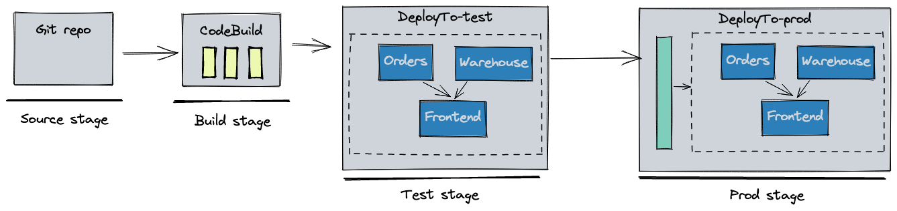

AWS Copilot v1.18: Certificate import, ordering deployments in a pipeline, and more
The AWS Copilot core team is announcing the Copilot v1.18 release. Special thanks to @corey-cole who contributed to this release. Our public сommunity сhat is growing and has almost 280 people online and over 2.2k stars on GitHub. Thanks to every one of you who shows love and support for AWS Copilot.
Copilot v1.18 brings several new features and improvements:
- Certificate import: You can now run
copilot env init --import-cert-arnsto import validated ACM certificates to your environment's load balancer listener. See detailed section. - Ordering deployments in a pipeline: You can now control the order in which services or jobs get deployed in a continuous delivery pipeline. See detailed section.
- Additional pipeline improvements: Besides deployment orders, you can now limit which services or jobs to deploy in your pipeline or deploy custom cloudformation stacks in a pipeline. See detailed section.
- "recreate" strategy for faster redeployments: You can now specify "recreate" deployment strategy so that ECS will stop old tasks in your service before starting new ones. See detailed section.
- Tracing for Load Balanced Web, Worker, and Backend Service: To collect and ship traces to AWS X-Ray from ECS tasks, we are introducing
observability.tracingconfiguration in the manifest to add an AWS Distro for OpenTelemetry Collector sidecar container. See detailed section.
What’s AWS Copilot?
Posted On: May 9, 2022
The AWS Copilot CLI is a tool for developers to build, release, and operate production ready containerized applications on AWS.
From getting started, pushing to staging, and releasing to production, Copilot can help manage the entire lifecycle of your application development.
At the foundation of Copilot is AWS CloudFormation, which enables you to provision infrastructure as code in a single operation.
Copilot provides pre-defined CloudFormation templates and user-friendly workflows for different types of micro services creation and operation,
enabling you to focus on developing your application, instead of writing deployment scripts.
See the section Overview for a more detailed introduction to AWS Copilot.
Certificate Import
Contributed by Penghao He
If you have domains managed outside of Route 53, or want to enable HTTPS without having a domain associated with your application, you can now use the new --import-cert-arns flag to import any validated certificates when creating your environments.
$ copilot env init --import-cert-arns arn:aws:acm:us-east-1:123456789012:certificate/12345678-1234-1234-1234-123456789012 --import-cert-arns arn:aws:acm:us-east-1:123456789012:certificate/87654321-4321-4321-4321-210987654321
For example, one of the certificates has example.com as its domain and *.example.com as a subject alternative name (SAN):
Sample certificate
{
"Certificate": {
"CertificateArn": "arn:aws:acm:us-east-1:123456789012:certificate/12345678-1234-1234-1234-123456789012",
"DomainName": "example.com",
"SubjectAlternativeNames": [
"*.example.com"
],
"DomainValidationOptions": [
{
"DomainName": "example.com",
"ValidationDomain": "example.com",
"ValidationStatus": "SUCCESS",
"ResourceRecord": {
"Name": "_45c8aa9ac85568e905a6c3852e62ebc6.example.com.",
"Type": "CNAME",
"Value": "_f8be688050b7d23184863690b3d4baa8.xrchbtpdjs.acm-validations.aws."
},
"ValidationMethod": "DNS"
}
],
...
}
Then, you need to specify aliases that are valid against any of the imported certificates in a Load Balanced Web Service manifest:
name: frontend
type: Load Balanced Web Service
http:
path: 'frontend'
alias: v1.example.com
Attention
Specifying http.alias in service manifests is required for deploying services to an environment with imported certificates.
After the deployment, add the DNS of the Application Load Balancer (ALB) created in the environment as an A record to where your alias domain is hosted. For example, if your alias domain is hosted in Route 53:
Sample Route 53 A Record
{
"Name": "v1.example.com.",
"Type": "A",
"AliasTarget": {
"HostedZoneId": "Z1H1FL3HABSF5",
"DNSName": "demo-publi-1d328e3bqag4r-1914228528.us-west-2.elb.amazonaws.com.",
"EvaluateTargetHealth": true
}
}
Now, your service has HTTPS enabled using your own certificates and can be accessed via https://v1.example.com!
Controlling Order of Deployments in a Pipeline
Contributed by Efe Karakus
Copilot provides the copilot pipeline commands to create continuous delivery pipelines to automatically release microservices in your git repository.
Prior to v1.18, all services and jobs defined in your git repository got deployed in parallel for each stage.
For example, given a monorepo with three microservices: frontend, orders, warehouse. All of them got deployed at the same time
to the test and prod environments:

name: release
source:
provider: GitHub
properties:
branch: main
repository: https://github.com/user/repo
stages:
- name: test
- name: prod
requires_approval: true
copilot
├── frontend
│ └── manifest.yml
├── orders
│ └── manifest.yml
└── warehouse
└── manifest.yml
Starting with v1.18, you can control the order of your deployments in your pipeline with the new deployments field.
stages:
- name: test
deployments:
orders:
warehouse:
frontend:
depends_on: [orders, warehouse]
- name: prod
require_approval: true
deployments:
orders:
warehouse:
frontend:
depends_on: [orders, warehouse]
orders and warehouse services should be deployed prior to the frontend so that clients can't send new API requests
before the downstream services are ready to accept them. Copilot figures out in which order the stacks should be deployed, and the resulting CodePipeline looks as follows:

Additional pipeline improvements
There are a few other enhancements that come with the new deployments field:
1. It is now possible for monorepos to configure which services or jobs to deploy in a pipeline. For example, I can limit
the pipeline to only deploy the orders microservice:
deployments:
orders:
copilot
├── api
│ └── manifest.yml
└── templates
├── cognito.params.json
└── cognito.yml
stack_name, template_path and template_config fields under deployments to specify deploying the cognito cloudformation stack in my pipeline:
deployments:
cognito:
stack_name: myapp-test-cognito
template_path: infrastructure/cognito.yml
template_config: infrastructure/cognito.params.json
api:
copilot/templates
to infrastructure/ with cp -r copilot/templates infrastructure/ so that the template_path and template_config
fields point to existing files.
"recreate" Strategy for Faster Redeployments
Contributed by Parag Bhingre
Alert
Due to the possible service downtime caused by "recreate", we do not recommend using it for your production services.
Before v1.18, a Copilot ECS-based service (Load Balanced Web Service, Backend Service, and Worker Service) redeployment always spun up new tasks, waited for them to be stable, and then stopped the old tasks. In order to support faster redeployments for ECS-based services in the development stage, users can specify "recreate" as the deployment strategy in the service manifest:
deployment:
rolling: recreate
Under the hood, Copilot sets minimumHealthyPercent and maximumPercent to 0 and 100 respectively (defaults are 100 and 200), so that old tasks are stopped before spinning up any new tasks.
Tracing for Load Balanced Web Service, Worker Service, and Backend Service
Contributed by Danny Randall
In v1.17, Copilot launched support for sending traces from your Request-Driven Web Services to AWS X-Ray.
Now, you can easily export traces from your Load Balanced Web, Worker, and Backend services to X-Ray by configuring observability in your service's manifest:
observability:
tracing: awsxray
For these service types, Copilot will deploy an AWS Distro for OpenTelemetry Collector sidecar container to collect traces from your service and export them to X-Ray. After instrumenting your service to send traces, you can view the end-to-end journey of requests through your services to aid in debugging and monitoring performance of your application.

Read our documentation on Observability to learn more about tracing and get started!
What’s next?
Download the new Copilot CLI version by following the link below and leave your feedback on GitHub or our Community Chat:
- Download the latest CLI version
- Try our Getting Started Guide
- Read full release notes on GitHub